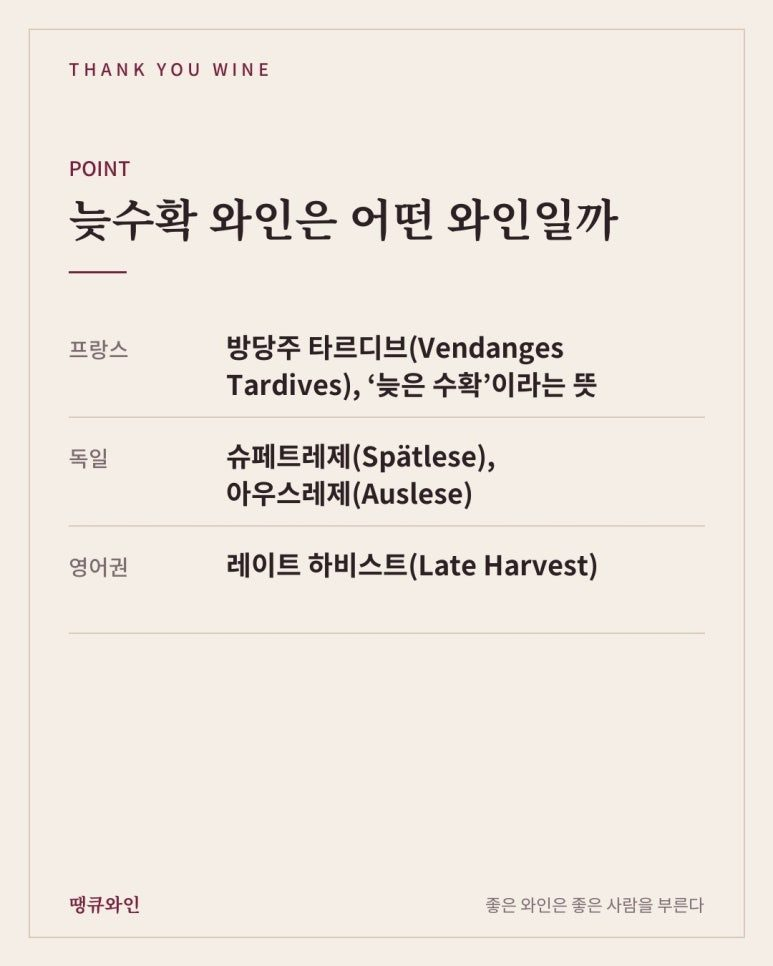
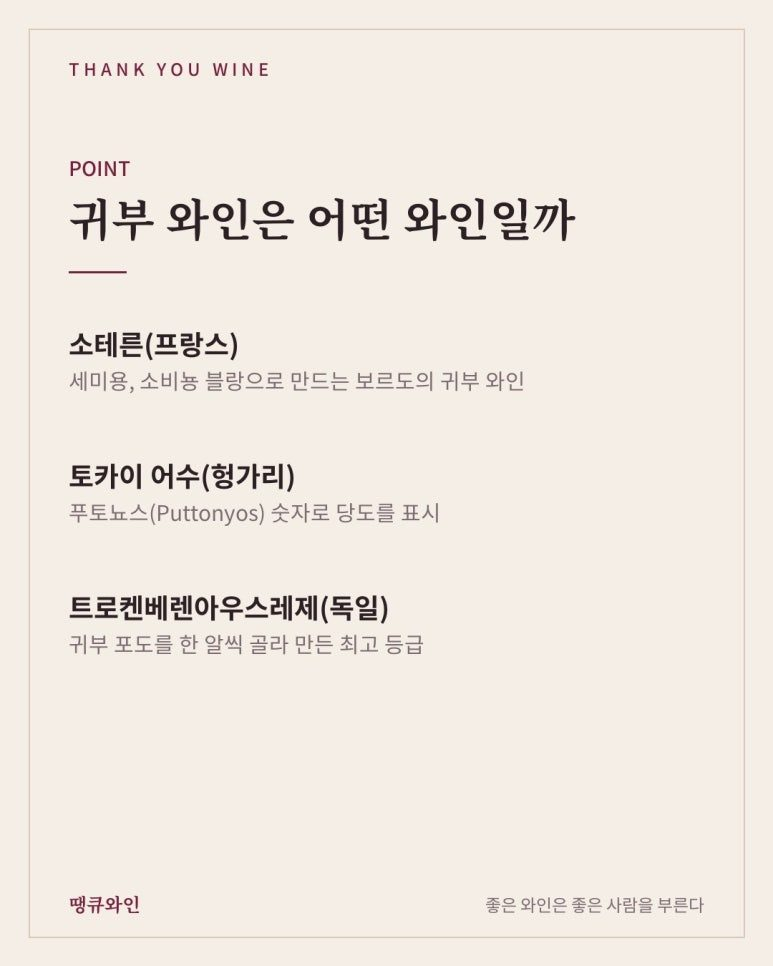
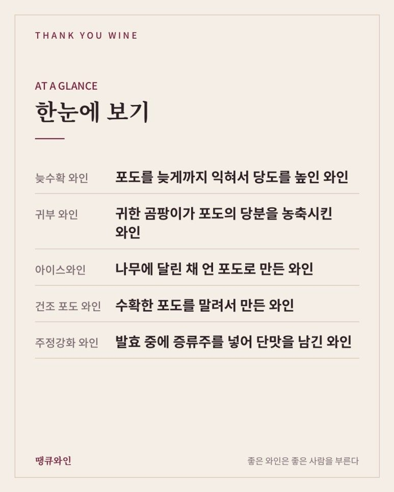
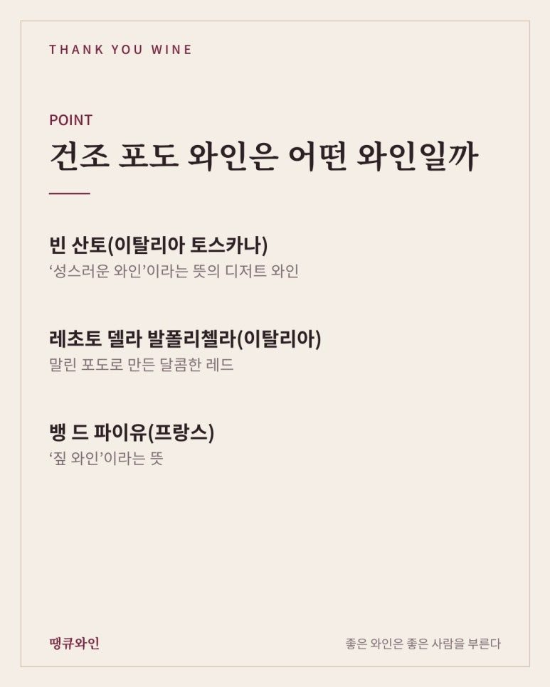
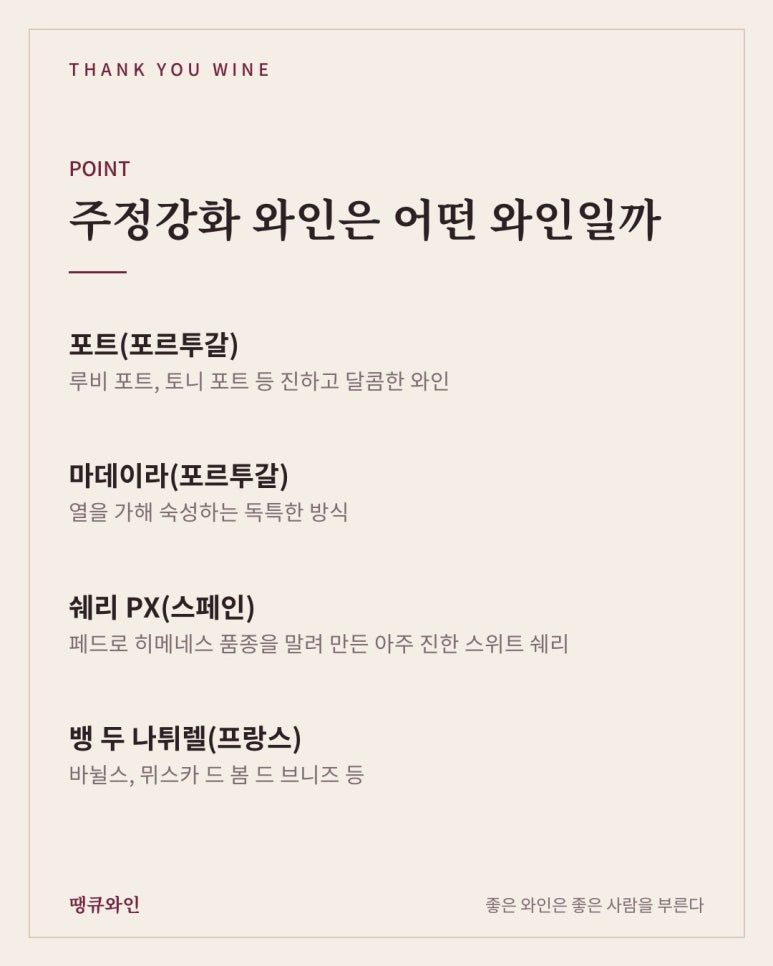
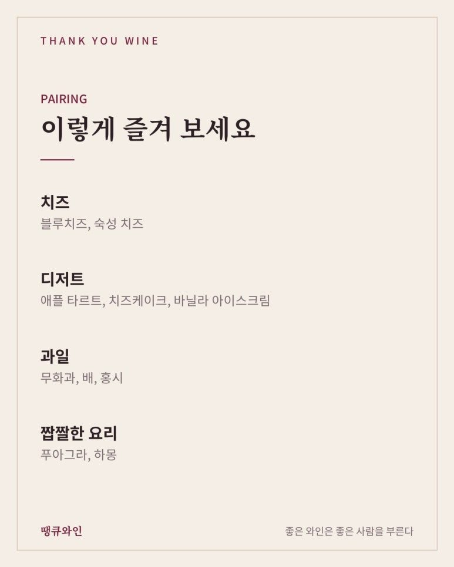
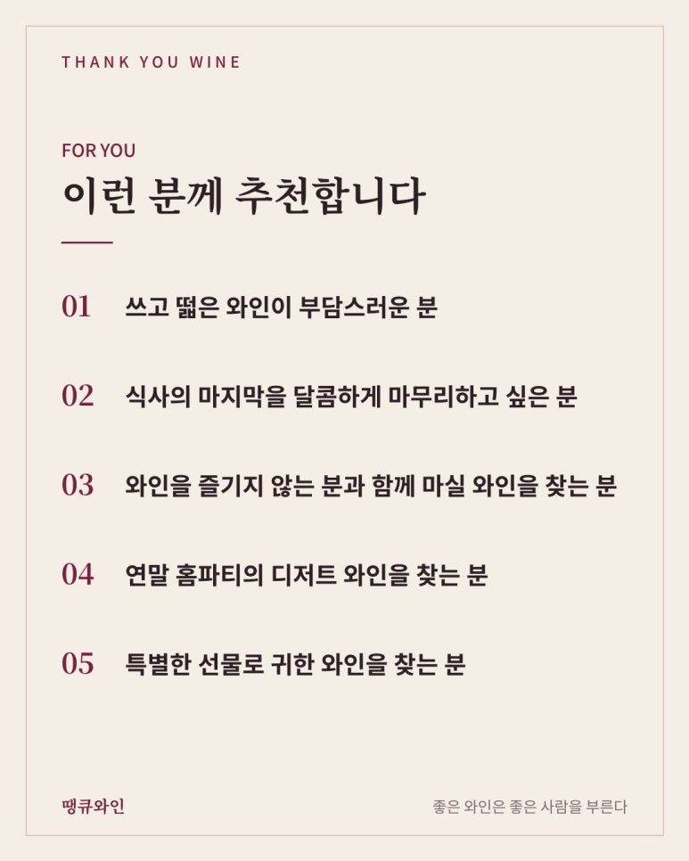

스위트 와인 종류 총정리
아이스와인, 귀부 와인, 포트까지 달콤한 와인 고르는 법
스위트 와인은 만드는 방법에 따라 늦수확 와인, 귀부 와인, 아이스와인, 건조 포도 와인, 주정강화 와인(포트 등)으로 나뉘어요. 포도를 늦게 익히거나, 귀한 곰팡이로 당분을 농축하거나, 언 포도를 쓰거나, 말린 포도를 쓰거나, 발효 중에 증류주를 넣는 식으로 단맛을 남겨요.
“단 와인 하나 추천해 주세요.”
와인샵에서 가장 자주 듣는 말 중 하나입니다.
그런데 막상 스위트 와인을 고르려고 하면 종류가 생각보다 많아서 헷갈리기 쉽습니다.
아이스와인, 귀부 와인, 포트, 모스카토…
모두 달콤한 와인이지만, 단맛을 만드는 방법이 서로 완전히 다르거든요.
오늘은 스위트 와인의 종류를 만드는 방법별로 한 번에 정리해 보았습니다.

한눈에 보는 스위트 와인 종류
• 늦수확 와인: 포도를 늦게까지 익혀서 당도를 높인 와인
• 귀부 와인: 귀한 곰팡이가 포도의 당분을 농축시킨 와인
• 아이스와인: 나무에 달린 채 언 포도로 만든 와인
• 건조 포도 와인: 수확한 포도를 말려서 만든 와인
• 주정강화 와인: 발효 중에 증류주를 넣어 단맛을 남긴 와인
와인은 어떻게 달콤해질까?
와인은 포도의 당분을 효모가 알코올로 바꾸면서 만들어집니다.
당분이 모두 알코올로 바뀌면 드라이한 와인이 되고, 당분이 와인 속에 남으면 스위트 와인이 되죠.
그래서 스위트 와인을 만드는 방법은 크게 두 가지입니다.
첫째, 포도 자체의 당분을 아주 높게 만들어서 다 발효되지 못하고 남게 하는 방법.
둘째, 발효를 중간에 멈춰서 당분을 남기는 방법.
지금부터 소개할 스위트 와인들은 모두 이 두 가지 중 하나의 방법으로 만들어집니다.
늦수확 와인은 어떤 와인일까?
가장 기본적인 방법은 포도를 오래 나무에 두는 것입니다.
수확 시기를 늦출수록 포도의 수분은 줄고 당분은 높아집니다.
• 프랑스: 방당주 타르디브(Vendanges Tardives), ‘늦은 수확’이라는 뜻
• 독일: 슈페트레제(Spätlese), 아우스레제(Auslese)
• 영어권: 레이트 하비스트(Late Harvest)

독일 와인은 수확할 때의 당도에 따라 카비넷, 슈페트레제, 아우스레제처럼 이름이 붙는데요.
슈페트레제부터는 은은한 단맛이 느껴지는 경우가 많아, 스위트 와인을 처음 시작하는 분께 부담 없이 추천하기 좋습니다.
귀부 와인은 어떤 와인일까?
귀부 와인은 보트리티스 시네레아(Botrytis cinerea)라는 곰팡이 덕분에 만들어지는 와인입니다.
아침 안개와 오후 햇살이 반복되는 곳에서 이 곰팡이가 포도 껍질에 작은 구멍을 내면, 포도 속 수분이 날아가면서 당분과 향이 진하게 농축됩니다.
포도가 쭈글쭈글하게 말라 보기에는 상한 것 같지만, 그래서 ‘귀한 부패’라는 뜻의 귀부(貴腐)라는 이름이 붙었습니다.
- 소테른(프랑스): 세미용, 소비뇽 블랑으로 만드는 보르도의 귀부 와인
- 토카이 어수(헝가리): 푸토뇨스(Puttonyos) 숫자로 당도를 표시
- 트로켄베렌아우스레제(독일): 귀부 포도를 한 알씩 골라 만든 최고 등급

꿀, 살구, 말린 과일, 사프란 같은 향이 겹겹이 느껴지고, 단맛과 산미가 함께 살아 있어 수십 년 숙성도 가능한 와인입니다.

아이스와인은 어떤 와인일까?
아이스와인은 나무에 달린 채 꽁꽁 언 포도로 만드는 와인입니다.
독일에서는 아이스바인(Eiswein), 캐나다에서는 아이스와인(Icewine)이라고 부르는데요.
독일은 영하 7도 이하로 기온이 떨어졌을 때 언 포도를 수확하도록 정해 두었습니다.
언 포도를 그대로 압착하면 물은 얼음으로 남고, 당분과 산이 농축된 즙만 조금 흘러나옵니다.
그래서 아이스와인은 농축된 단맛과 선명한 산미가 함께 느껴지는 것이 특징입니다.
건조 포도 와인은 어떤 와인일까?
수확한 포도를 짚이나 선반 위에서 몇 달 동안 말려서 만드는 와인도 있습니다.
포도가 건포도처럼 마르면서 당분이 농축되는 원리죠.
• 빈 산토(이탈리아 토스카나): ‘성스러운 와인’이라는 뜻의 디저트 와인
• 레초토 델라 발폴리첼라(이탈리아): 말린 포도로 만든 달콤한 레드
• 뱅 드 파이유(프랑스): ‘짚 와인’이라는 뜻

이탈리아에서는 이런 방식을 파시토(Passito)라고 부릅니다.
주정강화 와인은 어떤 와인일까?
주정강화 와인은 발효 중간에 포도 증류주를 넣어 발효를 멈추는 와인입니다.
알코올이 높아지면 효모가 더 이상 일을 하지 못해, 포도의 당분이 그대로 남게 되죠.
- 포트(포르투갈): 루비 포트, 토니 포트 등 진하고 달콤한 와인
- 마데이라(포르투갈): 열을 가해 숙성하는 독특한 방식
- 쉐리 PX(스페인): 페드로 히메네스 품종을 말려 만든 아주 진한 스위트 쉐리
- 뱅 두 나튀렐(프랑스): 바뉠스, 뮈스카 드 봄 드 브니즈 등

알코올이 보통 와인보다 높은 편이라, 작은 잔으로 천천히 즐기는 와인입니다.
달콤한 스파클링 와인도 있을까?
네, 기포가 있는 스위트 와인도 있습니다.
• 모스카토 다스티(이탈리아): 알코올이 낮고 은은한 기포의 달콤한 와인
• 아스티 스푸만테(이탈리아): 기포가 더 풍성한 스위트 스파클링
• 샴페인 드미 섹, 두(프랑스): 단맛이 있는 샴페인
특히 모스카토는 알코올 도수가 낮고 복숭아, 꽃 향이 풍부해, 와인을 처음 마시는 분들도 가장 편하게 즐길 수 있는 스위트 와인입니다.
스위트 와인은 어떻게 마시면 좋을까?
스위트 와인은 차갑게, 작은 잔으로 마시는 것이 좋습니다.
• 아이스와인, 귀부 와인, 모스카토: 6~8도 정도로 차갑게
• 토니 포트: 12~14도 정도로 살짝 서늘하게
• 잔: 작은 화이트 와인 잔에 50~70ml씩
단맛이 진한 와인이라 한 번에 많이 마시기보다, 식사의 마지막에 한 잔씩 천천히 즐기는 와인입니다.
스위트 와인과 어울리는 음식은?
스위트 와인은 디저트뿐 아니라 짭짤한 음식과도 의외로 잘 어울립니다.
땡큐와인에서 추천한다면 이런 메뉴와 함께 즐겨보겠습니다.
- 치즈: 블루치즈, 숙성 치즈
- 디저트: 애플 타르트, 치즈케이크, 바닐라 아이스크림
- 과일: 무화과, 배, 홍시
- 짭짤한 요리: 푸아그라, 하몽

특히 블루치즈와 귀부 와인의 조합을 추천드립니다.
짭짤하고 진한 블루치즈에 꿀 같은 단맛이 더해지면, 단짠의 균형이 정말 좋거든요.
땡큐와인에서 만날 수 있는 스위트 와인
오늘 소개한 스위트 와인 가운데 일부는 땡큐와인에서도 만나보실 수 있습니다.
- 아이스와인: 라인헤센 아이스바인
- 귀부 와인: 샤토 디켐 소테른, 폴레조키 토카이 어수
- 늦수확 와인: 토마스 슈미트 아우스레제
- 주정강화 와인: 콥케 10년 토니 포트
- 스위트 스파클링: 미라벤토 모스카토 스푸만테
스위트 와인, 이런 분께 추천합니다
• 쓰고 떫은 와인이 부담스러운 분
• 식사의 마지막을 달콤하게 마무리하고 싶은 분
• 와인을 즐기지 않는 분과 함께 마실 와인을 찾는 분
• 연말 홈파티의 디저트 와인을 찾는 분
• 특별한 선물로 귀한 와인을 찾는 분

자주 묻는 질문
Q. 스위트 와인은 다 저렴한 와인인가요?
A. 그렇지 않습니다. 귀부 와인이나 아이스와인처럼 만들기 까다로운 스위트 와인은 세계에서 가장 귀한 와인으로 꼽히기도 합니다.
Q. 열고 나서 얼마나 보관할 수 있나요?
A. 당도가 높은 와인은 일반 와인보다 오래 가는 편입니다. 마개를 잘 막아 냉장 보관하면 며칠에서 길게는 몇 주까지 즐길 수 있고, 포트는 더 오래 보관할 수 있습니다.
Q. 단맛이 적은 와인부터 시작하고 싶다면요?
A. 모스카토 다스티나 독일 리슬링 슈페트레제처럼 은은한 단맛의 와인부터 시작해 보시는 것을 추천드립니다.
결국 스위트 와인의 매력은 ‘기다림이 만든 단맛’입니다
스위트 와인의 단맛은 설탕을 넣어 만든 것이 아니라, 늦가을의 햇살, 안개, 한겨울의 추위, 그리고 오랜 기다림이 만든 것입니다.
그래서 저는 스위트 와인을
“자연과 시간이 함께 만든 디저트”
라고 소개하고 싶습니다.
오늘 저녁 식사의 마지막은 작은 잔의 스위트 와인으로 달콤하게 마무리해 보세요.
이 글은 땡큐와인 네이버 블로그에 먼저 올린 글이에요.